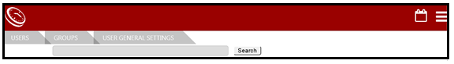
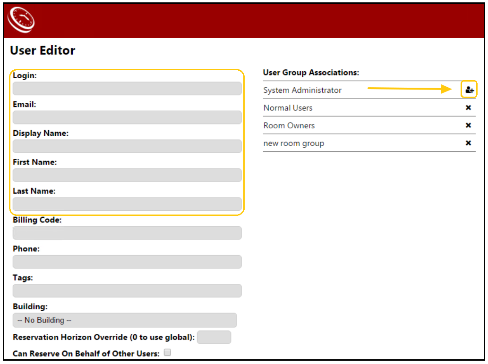
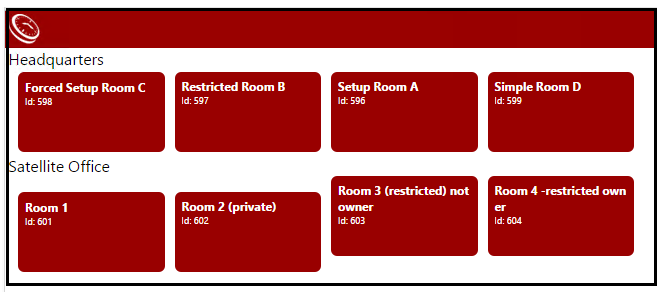
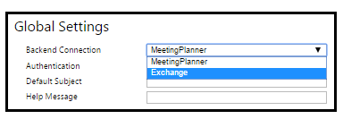
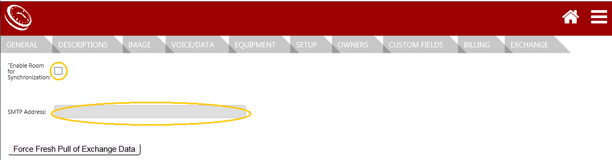

Complete the Room Sign with Exchange Back-end Connection
Access Room Signs Application
- Access the Room Signs application at: http://<yourserver>/suite.
- View the Users & Groups page (as in the image below) that will return, the first time the Room Sign application is opened. To gain further access to the application, an administrator profile must be setup.

Setup Administrator Profile
(Application>Users&Groups)
Setup an administrator profile to gain access to the necessary settings to complete the Room Sign with Exchange Connection.
- Select New User from the bottom right corner of the Users&Group page and complete the basic user information to create a profile (using your Windows credentials).
- Enter windows Login.
- Enter Email address.
- Enter Display Name.
- Enter First Name. First name is not checked against AD.
- Enter Last Name. Last name is not checked against AD.
NOTE: Ignore the additional user profile fields as they are not necessary.
- Click on the ‘X’ next to System administrator two times until the icon is viewed.
- Select Save.

View Room Sign Homepage
http://<yourserver>/suite>Room Signs

Setup Room Sign Integration with Exchange Web Services
The settings below allow Room Signs and Software to integrate with Exchange Web Services.
EWS
(Application>Integrations>EWS)
- To integrate EWS, the MeetingPlanner Installer must have the following data from the pre-installation. (Sever Setup and Configure Service Account):
- EWS URL
- EWS Service Account
- EWS Service Account Domain and Password.
- Go to Application>Integrations>EWS from the Menu navigation icon and dropdown menu).
- Enter the EWS URL provided upon installation (e.g., https//exchange.acme.com/ews/exchange.asmx).
- Enter the EWS Service Account provided upon installation. Please see the IT support member from your organization that installed EWS for service account information.
- Enter the EWS Service Account Domain.
- Enter the EWS Service Account Password. Please see the IT support member from your organization that installed EWS for service account password.
Connect to Exchange
(Application>Sign Configuration)
- Go to Application>Sign Configuration from the Menu navigation icon and dropdown menu.
- Select Exchange from the Back-end Connection field dropdown.
- Select Save.

Locations & Room
(Hierarchy>Locations&Rooms>Edit room)
NOTE: Typically, organizations modify the Room Sign environment that defaults upon install. Although, a room migration template is available for large environments. Please open a support portal ticket to request a template and script for data import if necessary.
General
(Hierarchy>Locations&Rooms> Edit room>General)
- Select General.
- Select the Edit icon next to the room to modify.
- Go to Room Name field and customize the room name.
- Select Save.
Exchange
- To integrate Exchange, the MeetingPlanner Installer must have the SMTP address for each room.
- Select Exchange.
- Enable Room for Synchronization.
- Enter the SMTP Address. The address will allow the rooms to be pulled into the user’s Outlook Calendar. Please see IT support member from your organization that installed EWS for each room’s unique SMTP address.
- Select Save.
